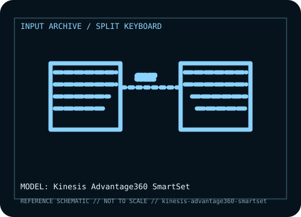

[ KEYBOARDS AND INTEGRATED POINTING DEVICES // IDENTIFIED COMPONENT ]
Kinesis Advantage360 SmartSet
Wired split ergonomic keyboard with deeply contoured key wells, thumb clusters, and onboard SmartSet layout storage for reduced-reach typing.

MODEL IDENTIFICATION: Advantage360 SmartSet wired model (KB360); distinct from Advantage360 Pro wireless/ZMK configurations. Verify the bottom label, regional SKU, receiver, and revision against the sources before repair or compatibility claims.
Model specifications
| Catalog subcategory | Keyboards and integrated pointing devices |
|---|---|
| Form factor / layout | Split contoured ergonomic layout with sculpted key wells and thumb clusters; each half has a separate physical footprint and adjustable tenting. It is not a conventional flat ANSI layout. |
| Key mechanism / controls | Mechanical switch configuration depends on the purchased variant; check the model label and switch option. The defining Advantage360 features are the split sculpted wells, thumb clusters, and programmable onboard SmartSet layer. |
| Wired protocol | Wired USB-C host connection. The standard SmartSet edition is not the same host-protocol configuration as Advantage360 Pro; do not assume wireless pairing from the family name. |
| Wireless protocol | No Bluetooth host connection on the wired SmartSet model recorded here. Advantage360 Pro adds a different wireless/ZMK feature set and is excluded from these specifications. |
| Host compatibility | USB keyboard input works with compatible USB hosts. Ergonomic split form may require adaptation; host-side remapping tools are not required for basic typing. SmartSet programming and layouts are performed using the manufacturer’s model-specific controls/software. |
| Configuration / software | SmartSet firmware stores layouts onboard and exposes supported configuration functions. Keep a copy of the configured layout and preserve the exact KB360 model when applying instructions or firmware. |
| Revision / service caveat | This entry is specifically the wired Advantage360 SmartSet (KB360), not Advantage360 Pro, Freestyle, or other Kinesis contoured keyboards. Switch selection and case revisions should be checked against the label. |
Preservation and service notes
Record the unit label, keyboard layout, switch option, cable or matched receiver, host OS, and test mode before troubleshooting. For wireless models, distinguish Bluetooth pairing from proprietary receiver operation; for wired models, verify that the USB connection carries data rather than power only.
Keep saved layouts and firmware with the exact model/revision. Disconnect power before switch or keycap service, use manufacturer-safe cleaning methods, and do not infer a unit’s configuration from a broad product-family name.
Manufacturer and independent references
- Kinesis — Advantage360 product informationPrimary manufacturer product reference for identifying this model and its stated feature set.
- Kinesis — KB360 SmartSet support and setupAdditional manufacturer documentation or independent model-specific testing; consult the revision/region applicable to the physical unit.
Product pages and support resources can change. Preserve the applicable manual or page revision when documenting a particular keyboard.